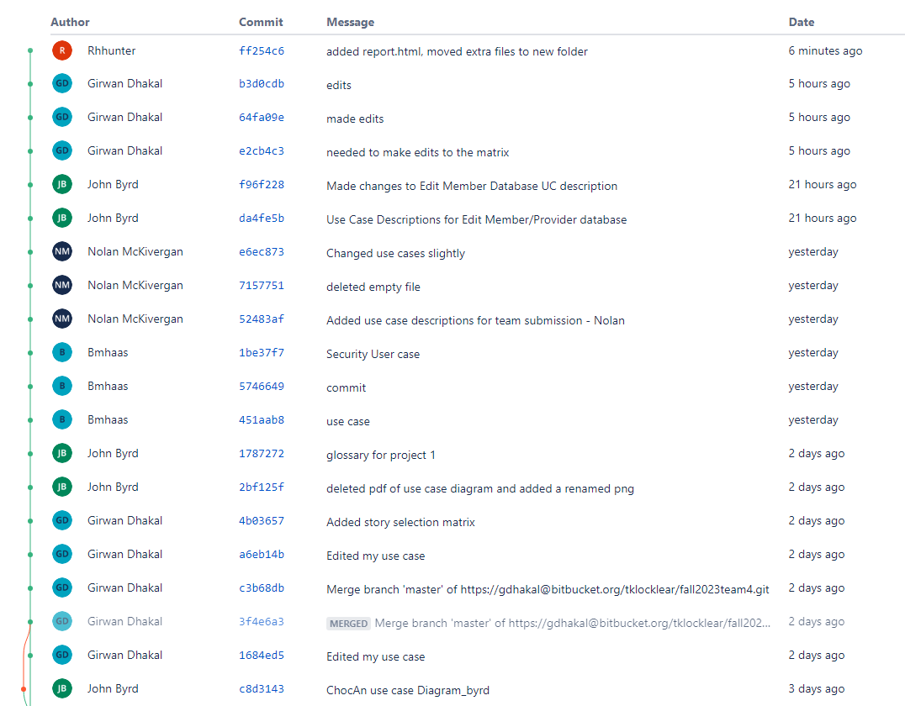
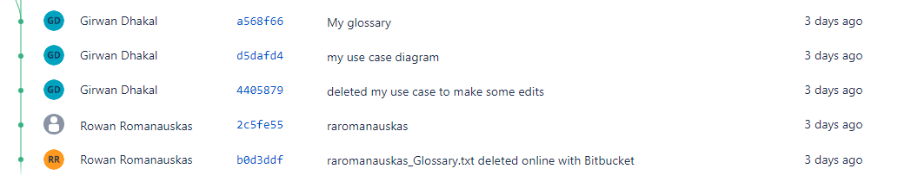
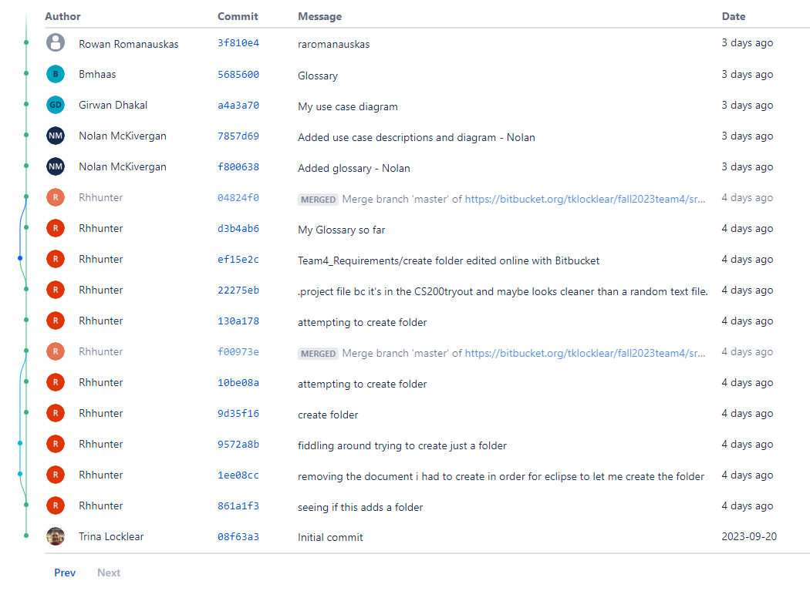

| Name | Contact Email | CWID | Hours |
|---|---|---|---|
| John Byrd | jabyrd2@crimson.ua.edu | 12105976 | 8 |
| Pearson Hunter | rhhunter@crimson.ua.edu | 12192300 | 9 |
| Girwan Dhakal | gdhakal@crimson.ua.edu | 12274204 | 7.5 |
| Benjamin Haas | bmhaas@crimson.ua.edu | 11765316 | 7 |
| Nolan McKivergan | npmckivergan@crimson.ua.edu | 12285017 | 7.5 |
| Rowan Romanauskas | raromanauskas@crimson.ua.edu | 12275563 | 8 |
| Name | Task | Percentage |
|---|---|---|
| John Byrd | Use Case Discriptions: Edit Member Status HTML for Tables |
16.6% |
| Pearson Hunter | Submitter, Final Glossary, Final Use Case Diagram, Short Paragraph | 16.6% |
| Girwan Dhakal | Story Selection Matrix | 16.6% |
| Benjamin Haas | Use Case Discriptions: Distribute End of Week Report Generic Security User Stories |
16.6% |
| Nolan McKivergan | Use Case Discriptions: Update Info on ChocAn Server, Request Provider Directory | 16.6% |
| Rowan Romanauskas | Use Case Discriptions: Scan Member Card, Request Individual Report | 16.6% |


